Explore our completed portfolio and specialized solutions across industries.
We deliver durable infrastructure built to withstand heavy wear and environmental demands. Our team handles every phase of civil construction from initial ground preparation to high-volume thoroughfares.
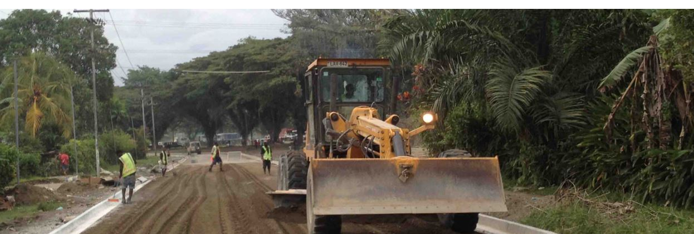
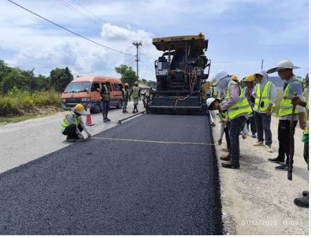
From foundational pours to complex structural framing, we erect residential, commercial, and industrial facilities. We manage end-to-end building steps with strict compliance to safety standards.
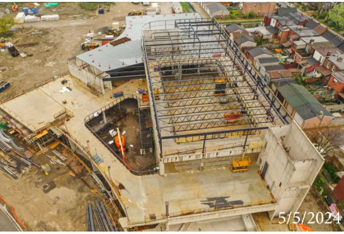
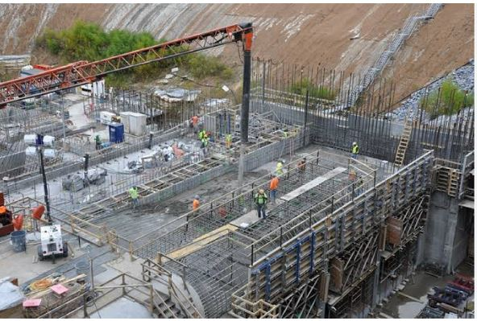
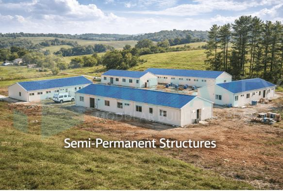
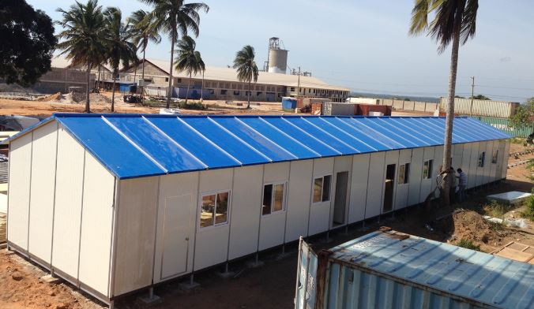
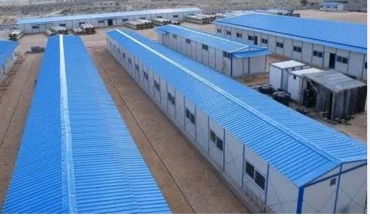
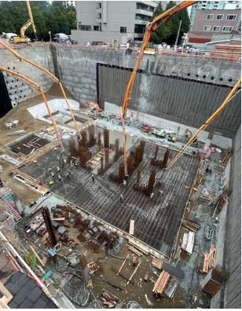
Transform existing properties and protect long-term asset value with targeted remodeling and ongoing upkeep. We focus on modernizing layouts with minimal disruption to your daily operations.
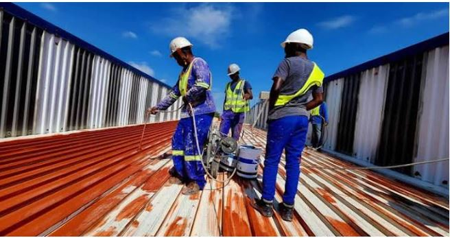
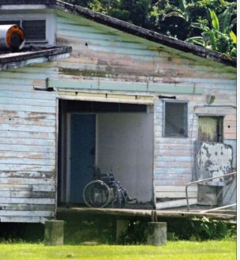
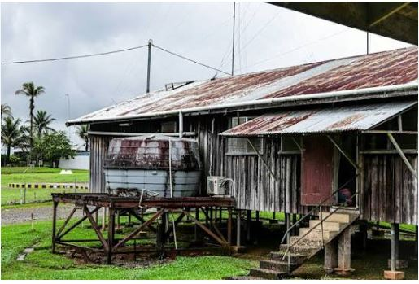
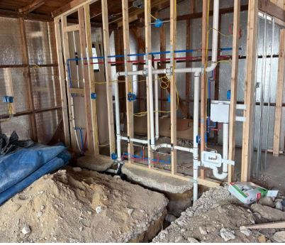
Enhance security, map out boundaries, and elevate structural curb appeal with our external perimeter services. We combine strong structural masonry with weather-resistant framing.
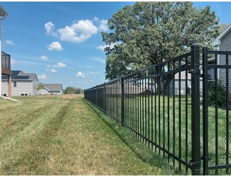
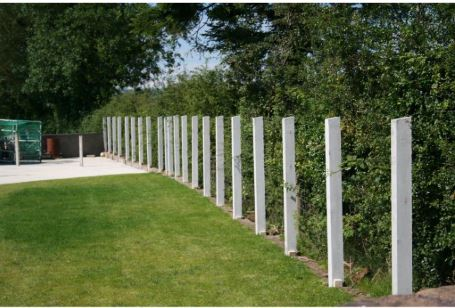
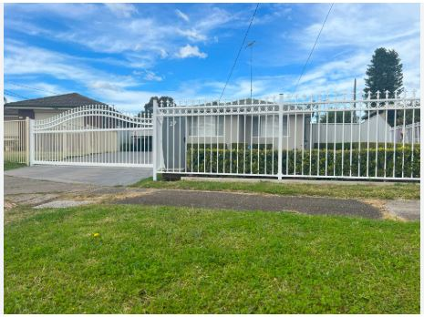
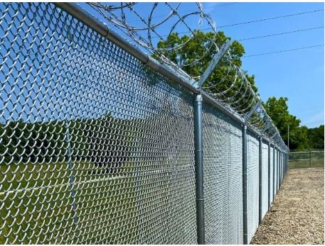
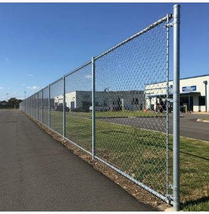
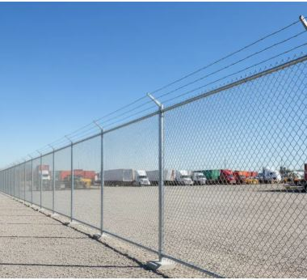
Streamline complex commercial operations with overarching site management and robust logistical pipelines. We coordinate subcontractors and maintain optimal project delivery timelines.
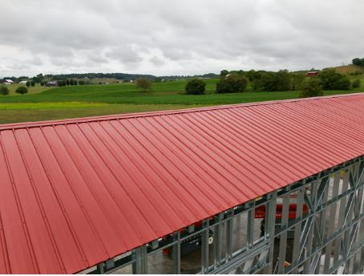
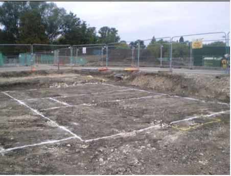
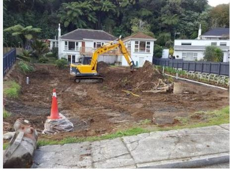
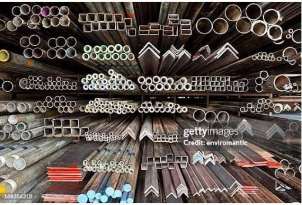
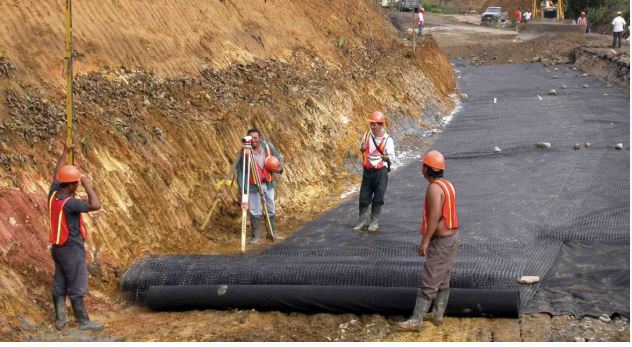
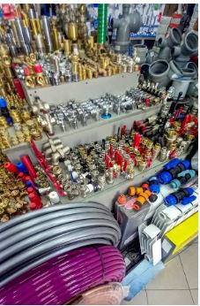